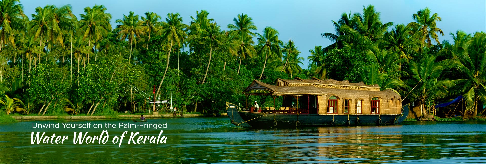
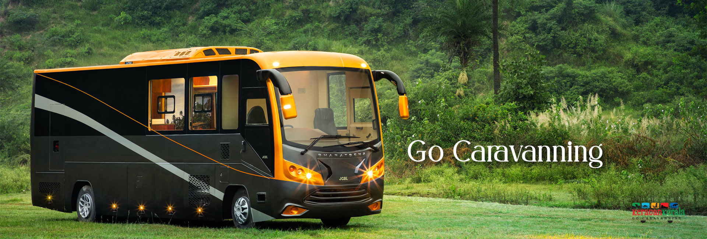
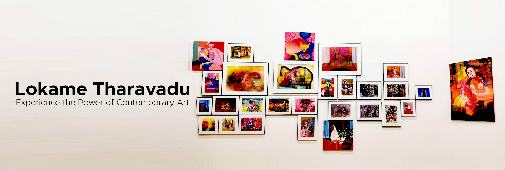
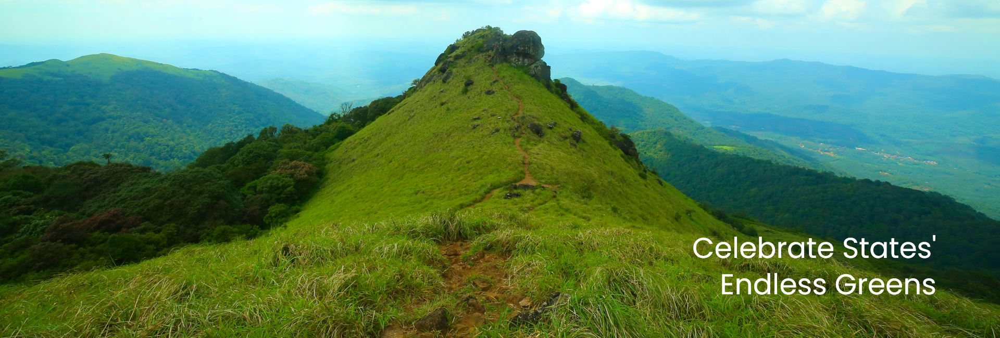

Stroll on the sparkling sunny sand lying on the seashores of Kerala. Beaches at Kerala are high on the beauty quotient and they seldom fail to impress. These seasides just unfold its magical sights and let you witness the Arabian Sea in its entire splendour.
The exotic beauty and grace of hill stations of Kerala has always attracted the eyes of tourists. Enjoy the absolute serenity of the monsoon hills of Kerala. The beautiful land of Kerala offers myriad landscapes and experiences to enchants its visitors.
A heritage travel around God's Own Country will bring back glimpses of the royal past. These enchanting palaces are the best to tell about the royal era of Kerala. Some are built in typical Kerala style of architecture and some have colonial influences.

Waterfalls in kerala are known for their beauty and uniqueness. They splash down the mountains leaving all who view them enchanted by the sheer magnitude and picturesque quality they possess. These are special zones where time stops to marvel at the breath-taking creations of nature.

Monuments are among the most crucial living symbols of the past and history. Like every other state, Kerala too has its share of historic monuments that narrate tales of the bygone eras. Though many of the monuments in Kerala are in bad condition, there are some that still live on gloriously till date.

For centuries, our wildlife has attracted zoologists who have come across a wide variety of rare and indigenous species across Kerala’s landscape. Many have indeed compared Kerala to the Garden of Eden due to the number of unique species that seem to thrive on its terrain.